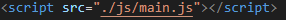

한 권으로 끝내는 웹 개발 교과서
모던 자바스크립트 프로그래밍의 정석 - 1.자바스크립트 시작하기
01-1 자바스크립트를 위한 기본 상식
자바 스크립트란 ?
정적인 웹 언어에서 연산과 액션을 구현하는 언어로 사용
웹 브라우저가 클라이언트의 기준이 되면서 웹에서 자바스크립트의 비중이 커지고 있음
자바와 자바스크립트는 서로 다른 언어
에크마스크립트란 ?
유럽컴퓨터제조연합에서 제정한 스크립트 표준
자바스크립트 언어가 발전하고 에크마스크립트의 기준을 따라가면서 에크마스크립트의 대표적인 작성 언어로 평가됨
01-2 웹 개발에서 자바스크립트의 역할
클라이언트
웹사이트를 볼 수 있는 플랫폼(PC, Mobile등),서버에서 정보를 받아 사용자에게 전달
서버
클라이언트에 사용자의 요청화면이나 작업을 처리하여 클라이언트에 전달
프론트엔드
앞에 있어서 사용자에게 보이는 부분
웹 사이트나 애플리케이션에서 내용을 작성하고 화면을 디자인 하는 것부터 사용자의 동작에 반응해서 결과를 만드는것
클라이언트단을 개발, 화면구성 및 액션, 서버와의 통신으로 받은 데이터를 정형화
대표 프레임워크 : React, Vue.js, Angular
React : 페이스북에서 만든 라이브러리, 사용자 인터페이스를 만들 수 있음
Vue.js : 사용자 인터페이스를 만들어주는 프레임 워크로, 웹 애플리케이션을 만들 수 있음
Angular : 구글에서 개발한 프레임워크, 수많은 기능을 지원하므로 큰 규모의 웹 사이트를 개발하는데 적합
백엔드
뒤에 있어서 사용자에게 보이지 않는 부분
클라이언트 쪽에서 어떤 요청을 하면 서버에서는 요청을 처리하기 위한 프로그램을 실행하는데, 이때 서버에서 실행할 프로그램을 만드는 것
클라이언트와의 통신, 서버작업, 데이터베이스 통신등 서버의 전반적인 기능 개발
대표 프레임워크 : Spring Framework, Node.js, Python, Go
01-3 코드 작성을 위한 편집기 설정하기
Visual Studio Code 설치 및 확장 프로그램 설치
코딩환경설정 바꾸기 : Ctrl + ,
확장 설치하기
왼쪽의 확장 버튼 클릭
Live Server : HTML화면 실시간 미리보기
prettier, beautify : 코드를 보기좋게 정리
HTML to CSS autocompletion, HTML CSS support : HTML, CSS간 자동완성 지원
01-4 간단한 스크립트부터 시작하기
웹 문서에서 스크립트 소스 작성 요령
인라인스크립트 예시 바로가기
내부스크립트 예시 바로가기
외부스크립트 파일 링크 : 자바스크립트 코드를 따로 작성하여 HTML파일에 script src ='' 로 JS 파일 연동
